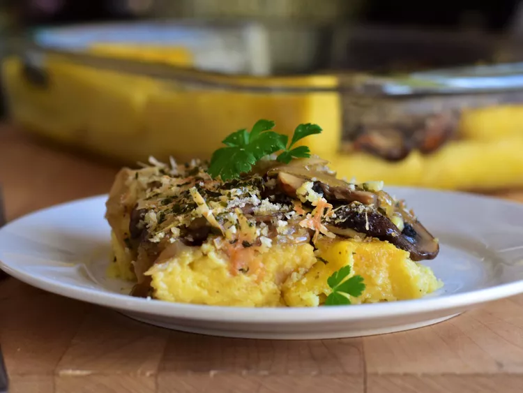

Creamy Baked Polenta and Mushrooms

Dish Description
Baked polenta and mushrooms for a hearty, satisfying meatless meal.
Ingredients
- 4 ½ cups water
- 1 ¾ cups cornmeal
- ½ cup grated Parmesan cheese, divided
- 1 large egg yolk
- 4 tablespoons melted butter, divided
- ½ teaspoon salt
- 1 pinch ground nutmeg
- 3 tablespoons olive oil
- 1 tablespoon butter
- 1 medium onion, sliced
- 1 pound fresh mushrooms, sliced
- ⅓ cup brandy
- 3 cloves garlic, minced
- 2 tablespoons dry bread crumbs
- 1 tablespoon dried parsley
- Butter a 8x12-inch rimmed baking sheet. Bring water to a boil in a saucepan. Add cornmeal and whisk. Cook until mixture pulls away from the sides of the saucepan, stirring constantly, 5 to 7 minutes.
- Stir in 1/4 cup Parmesan cheese, egg yolk, 2 tablespoons melted butter, salt, and nutmeg. Pour onto the prepared baking sheet and spread into a rectangle about 1/2 inch thick. Cool for at least 2 hours. Trim edges and cut into 1-inch cubes.
- Heat olive oil and 1 tablespoon butter in a skillet over medium-high heat. Add onions and saute for 5 minutes. Add mushrooms and cook for 5 minutes. Stir in brandy and garlic; heat through, about 5 minutes more. The mixture should be saucy.
- Preheat the oven to 400 degrees F (200 degrees C). Butter a large baking dish.
- Place polenta cubes in the prepared baking dish, top with mushroom mixture, including juices. Mix remaining 1/4 cup Parmesan cheese, remaining 2 tablespoons melted butter, bread crumbs, and dried parsley together in a bowl. Sprinkle bread crumb mixture on top of mushrooms.
- Bake in the preheated oven until browned and bubbly, about 30 minutes.